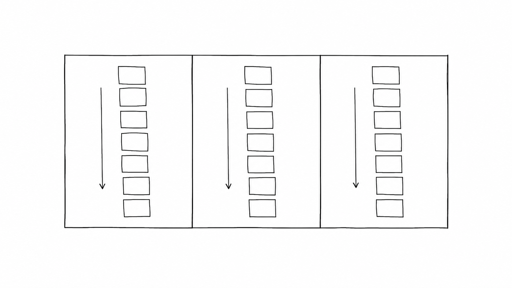
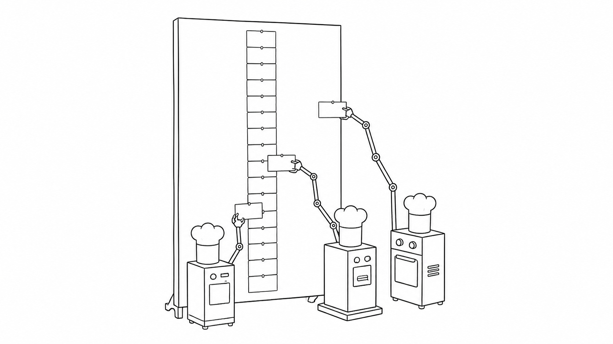

Masalah sehari-hari
Satu restoran bisa menerima ratusan pesanan. Dapur perlu membagikan kabar yang sama kepada kasir, juru masak, dan bagian pengantaran. Jika satu tiket langsung diambil lalu dibuang, orang yang datang terlambat tidak tahu apa yang terjadi.
Analogi Kuka
Kuka menemukan papan tiket raksasa di antara banyak dapur. Setiap tiket menempel berurutan dari atas ke bawah. Tiket baru selalu masuk di ujung. Tiket lama tidak dicabut ketika sudah dibaca.
Setiap dapur punya pembatas bukunya sendiri. Pembatas itu menandai tiket terakhir yang sudah dibaca. Satu dapur boleh mengulang dari nomor lama, sementara dapur lain terus membaca tiket baru.
Peta istilah papan tiket
Papan tiket adalah Kafka. Jalur tiket adalah topic dan partition. Orang yang menempelkan tiket adalah producer. Juru masak yang membaca tiket adalah consumer. Pembatas buku adalah offset. Penjaga papan disebut broker.
Ilustrasi
Papan ini bukan tempat untuk menghapus pekerjaan setelah selesai. Ia menyimpan urutan kejadian. Banyak bagian dapur dapat memakai urutan yang sama untuk pekerjaan mereka.
Penjelasan konsep
Kafka adalah sistem untuk mengirim dan menyimpan event dalam jumlah besar. Bayangkan papan tiket raksasa yang dipakai banyak dapur. Setiap event masuk berurutan dan dapat dibaca oleh bagian yang membutuhkannya.
Pada antrean biasa, tiket diambil oleh satu pekerja lalu hilang dari papan. Dalam Kafka, log menyimpan tiket setelah dibaca. Banyak consumer dapat membaca tiket yang sama dari posisi mereka masing-masing.
Commit log adalah catatan yang hanya bergerak maju. Event baru ditambahkan di ujung. Nomor urut membantu sistem tahu posisi setiap event tanpa harus memindahkan catatan lama.
topic mengelompokkan event berdasarkan jenisnya, seperti pesanan atau pembayaran. Satu topic dapat dibagi menjadi beberapa partition. Tiap partition punya urutan sendiri dan membantu banyak pekerjaan berjalan bersamaan.

Broker dan replikasi
Broker adalah penjaga yang menerima, menyimpan, dan mengirim tiket. Salinan papan dapat disimpan di broker lain. Jika satu broker rusak, salinan membantu catatan tetap tersedia.
Producer
Producer membuat event lalu menempelkannya di ujung topic. Ia dapat memilih partition berdasarkan kunci tertentu. Producer tidak menghapus event yang sudah dikirim.
Consumer dan consumer group
Consumer membaca event dari partition. Dalam satu consumer group, beberapa consumer membagi pekerjaan. Satu event dibaca satu consumer dalam group itu, tetapi group lain dapat membacanya lagi.

Offset dan manajemen offset
offset adalah nomor posisi terakhir yang sudah dibaca consumer. Pembatas ini disimpan agar consumer dapat melanjutkan pekerjaan setelah berhenti. Consumer juga dapat kembali membaca dari offset yang lebih lama.
Semantik pengiriman
Dalam keadaan sibuk, satu event bisa terbaca dua kali. Consumer sebaiknya aman ketika menerima event yang sama. Sistem juga bisa mengatur kapan event dianggap sudah diproses.
Jaminan urutan
Kafka menjaga urutan di dalam satu partition. Urutan antarpartition tidak otomatis terjamin. Jika urutan global penting, desain pembagian jalurnya dengan hati-hati.
Retensi dan kompaksi log
Retensi menentukan berapa lama event lama disimpan. Kompaksi dapat menyisakan nilai terbaru untuk setiap kunci. Jadi papan bisa tetap berguna tanpa tumbuh selamanya.
Skema dan schema registry
Skema menjelaskan bentuk event. Schema registry menyimpan aturan bentuk itu agar producer dan consumer membaca data dengan cara yang sama.
Pola event-driven
Pada pola event-driven, bagian lain bereaksi ketika event baru muncul. Producer tidak perlu memanggil semua bagian itu satu per satu.
Stream processing
Stream processing membaca event sambil terus mengalir. Sistem dapat menyaring, menghitung, dan merangkum event tanpa menunggu seluruh data terkumpul.
Kafka vs antrean tradisional
Antrean cocok ketika satu pekerjaan harus diambil sekali lalu selesai. Kafka cocok ketika beberapa bagian perlu membaca riwayat event, memprosesnya ulang, atau mengikuti aliran baru.
Jebakan consumer
Jika consumer berhenti menggeser pembatas, event yang belum dibaca akan menumpuk. Pantau jarak antara event terbaru dan offset consumer. Jarak itu disebut lag.
Diagram alur
Pesanan baru menempel di ujung papan. Tiga juru masak membaca dengan pembatas masing-masing. Tiket lama tetap menempel dan bisa dibaca ulang kapan pun.
Contoh mini
Tiket 41: stok kopi habis Juru masak A: baca sampai 41 Pembatas A: digeser setelah membaca Tiket 41: tetap menempel Juru masak baru: bisa membaca ulang
Juru masak A boleh selesai bekerja setelah memproses tiket 41. Pembatasnya menyimpan posisi itu. Saat juru masak baru datang, tiket 41 masih tersedia untuk dibaca.
Ringkasan
- Kafka menyimpan event secara berurutan di papan yang dapat dibaca banyak bagian.
- Antrean menghapus tiket setelah diambil, sedangkan log Kafka menyimpan tiket lama.
- Commit log hanya bergerak maju dan memberi nomor pada setiap event.
- Topic dibagi menjadi partition agar banyak pekerjaan dapat berjalan bersamaan.
- Consumer group membagi pembacaan, sedangkan offset menandai posisi tiap consumer.
- Urutan terjamin di dalam satu partition, bukan otomatis di seluruh topic.
- Retensi, skema, dan stream processing membantu mengatur event yang terus mengalir.
- Consumer perlu aman saat event terbaca dua kali dan perlu dipantau agar tidak tertinggal.
Pertanyaan pemahaman
- Apa beda papan tiket bab 10, yang hilang setelah diambil, dengan papan Kafka, yang tetap menempel?
- Apa gunanya nomor urut (offset) dan pembatas buku tiap juru masak?
- Kenapa satu jalur menjamin urutan, tetapi antarjalur tidak?
Mau lebih dalam
Versi teknis membahas konfigurasi broker, cara consumer memproses event, dan pilihan desain untuk sistem yang lebih besar.
Disinggung sekilas
- Event sourcing dan CQRS
- Outbox dan change data capture
- Operasi dan monitoring
- Mendesain dengan Kafka
Belum dibahas di sini
Crib-sheet dan daftar perintah lengkap ada di versi teknis.